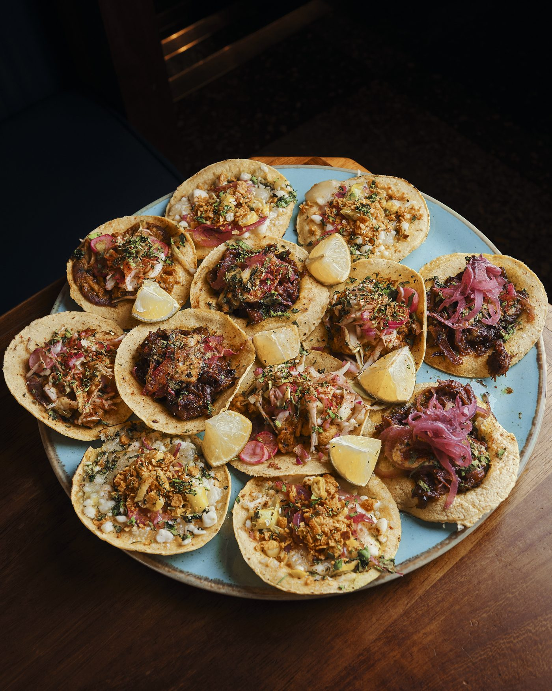

A fire-cooked main, two tacos and ninety minutes of free-flowing drinks. Not a light brunch. OpenTable Top 100 Brunch 2026.
Saturdays, 12.00 to 15.30
Busiest 12.30 to 13.30
25 Broadwick Street, W1F 0DF
Oxford Circus 3 min
Saturdays, 12.00 to 16.00
Last sitting 14.30
2 Angel Court, EC2R 7HJ
Bank 4 min · Moorgate 5 min
Same food on both. The Ultimate adds wine and margaritas to the pour for fifteen pounds more.
Whole table books the same tier · drinks are paused at the table for the full ninety minutes · a discretionary 15% service charge is added · tell your server about allergies.
 Steak and chips28-day dry-aged, fried egg, chimichurri
Steak and chips28-day dry-aged, fried egg, chimichurri Triple smashed cheeseburgerAmerican cheese, pickle, burger sauce
Triple smashed cheeseburgerAmerican cheese, pickle, burger sauce
Two tacos eachgoat's cheese · burnt ends · pork bitesStandard at £45 or Ultimate at £60. Everyone on the booking takes the same one, so settle it in the group chat first.
The clock starts when you're seated, not when you booked. Food and drinks run together, so you finish with the steak still warm and a full glass.
No bar queue. Tell your server what you want and it keeps arriving. The kitchen will handle vegetarians and most allergies if you flag them when you book.
Up to eight book online. Nine or more go through the events team, who'll hold a long table by the fire, sort the tiers and have the first round waiting. Soho's private room takes twenty behind the curtain.


The seafood version, Saturdays at temper City: hand-shucked oysters, seared scallop, tiger prawn and dry-aged steak over embers, with half a Cornish lobster on the £80 board. Ninety minutes of drinks, from £70.
Lobster & Steak Bottomless Brunch→"Bottomless brunch done properly. Not cheap prosecco. Actually good drinks and brilliant food."
Priya S · OpenTable"Steak for brunch, where else in Soho do you get this? The Ultimate package is worth it."
Marcus W · Google"Fire-cooked mains and ninety minutes of drinks. Our group stayed the full session."
Hannah K · GoogleConfirmed in seconds. Free to cancel. Up to eight online, nine or more through the events team.
9+ · Soho · City · Bar-B-Q & Crabshack · Opening list